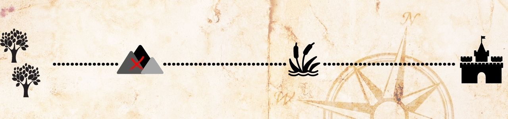

Depois de quase o dia inteiro caminhando, Ingwe ouviu um rugido e um clarão de fogo ao sul da Montanha Sombria. O que o grupo deve fazer?
1– Aguardar o dia nascer novamente, em cima das árvores.
2– Continuar sua caminhada para o Oeste, o mais rápido possível.

2– Continuar sua caminhada para o Oeste, o mais rápido possível.